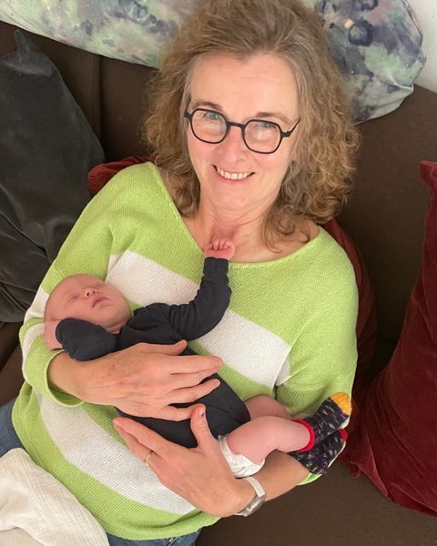

Doula in Erkelenz & Kreis Heinsberg
Einfühlsame Begleitung für deine Geburt
Als deine Doula begleite ich dich vor, während und nach der Geburt deines Kindes – liebevoll, zuverlässig und ganz an deiner Seite. Für Familien in Erkelenz, Heinsberg, Wegberg, Wassenberg und der gesamten Region Kreis Heinsberg.
Ausgebildete Doula (GfG Berlin, 2022) · Keine Cookies & kein Tracking auf dieser Website

Über mich
Ehefrau, Mutter, Oma – und deine Doula
Ich bin Ehefrau, Mutter von zwei Söhnen, selbst Tochter und Schwiegertochter, Freundin – und mittlerweile vierfache Oma. All diese Erfahrungen als Frau und Mutter begleiten mich auch in meiner Arbeit als Doula.
Meine Weiterbildung zur Doula habe ich 2022 bei der Gesellschaft für Geburtsvorbereitung (GfG) in Berlin abgeschlossen.
Als Doula begleite ich dich zur Geburt deines Kindes. Mir liegt dabei eine liebevolle, einfühlsame und zuverlässige Begleitung und Unterstützung sehr am Herzen.
Ablauf
So begleite ich dich
Geburtsbegleitung bedeutet für mich, dass du dich in jeder Phase gut aufgehoben fühlst – von der Schwangerschaft bis weit nach der Geburt.
-
01
Kennenlernen & Vorbereitung
Wir treffen uns mindestens drei Mal während der Schwangerschaft. Dabei sprechen wir über deine Vorstellungen von der Geburt und deine Wünsche an mich als Begleitung.
-
02
Rufbereitschaft rund um den Geburtstermin
Zehn Tage vor und zehn Tage nach dem errechneten Geburtstermin bin ich jederzeit für dich in Rufbereitschaft – du kannst mich bei Geburtsbeginn zu jeder Tages- und Nachtzeit anrufen.
-
03
An deiner Seite während der Geburt
Ich begleite dich während der gesamten Dauer der Geburt und sorge für einen Raum der Geborgenheit, Ruhe und Zuversicht – in der Klinik, im Geburtshaus oder bei dir zu Hause.
-
04
Nachgespräch
Nach der Geburt treffen wir uns noch einmal, um in Ruhe gemeinsam über das Erlebte zu sprechen.
Einsatzgebiet
Zuhause im Kreis Heinsberg
Als Doula begleite ich Familien in Erkelenz und der gesamten Region Kreis Heinsberg – unter anderem in den folgenden Orten:
- Erkelenz
- Heinsberg
- Wegberg
- Wassenberg
- Hückelhoven
- Geilenkirchen
- Übach-Palenberg
- Gangelt
- Selfkant
- Waldfeucht
Auch für eine Geburtsbegleitung etwas außerhalb dieses Gebiets sprich mich gerne persönlich an.
„Mir liegt eine liebevolle, einfühlsame und zuverlässige Begleitung sehr am Herzen.“Edda Möller
Häufige Fragen
Gut zu wissen
Was genau macht eine Doula?
Eine Doula begleitet dich als erfahrene, nicht-medizinische Unterstützung vor, während und nach der Geburt. Ich ergänze die Betreuung durch Hebamme und Ärztin oder Arzt und sorge für emotionale Sicherheit, Ruhe und Zuversicht.
Ab wann sollte ich eine Doula kontaktieren?
Am besten meldest du dich, sobald du dich für eine Doula-Begleitung interessierst, oft in der zweiten Schwangerschaftshälfte. So bleibt genug Zeit für mindestens drei gemeinsame Vorbereitungstreffen.
Begleitest du Geburten in der Klinik, im Geburtshaus und bei Hausgeburten?
Ja. Ich begleite dich unabhängig vom gewählten Geburtsort, ob Klinik, Geburtshaus oder Hausgeburt, immer ergänzend zu deiner Hebamme.
Übernimmt die Krankenkasse die Kosten für eine Doula?
Die Geburtsbegleitung kostet pauschal 1.000 € und ist eine private Zusatzleistung, die nicht routinemäßig von der gesetzlichen Krankenversicherung übernommen wird. Sprich mich bei Fragen dazu gerne persönlich an.
In welchen Orten bist du als Doula tätig?
Mein Schwerpunkt liegt in Erkelenz und im gesamten Kreis Heinsberg, unter anderem in Heinsberg, Wegberg, Wassenberg, Hückelhoven, Geilenkirchen, Übach-Palenberg, Gangelt, Selfkant und Waldfeucht.
Kontakt
Lass uns sprechen
Ich freue mich, wenn du dich unkompliziert bei mir meldest – per Telefon, WhatsApp, SMS oder E-Mail.